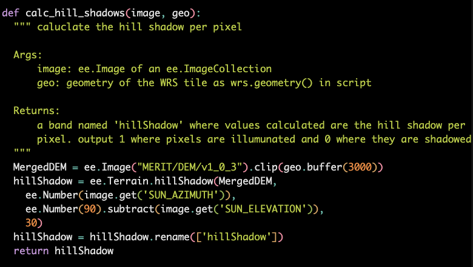

6 Landsat Collection 2 SRST Data Product
The lakeSR-Landsat data product is a set of tabular datasets, representing the Landsat surface reflectance (SR) and surface tempearture (ST) data summarized for the point of inaccessibility (POI) location which is meant to represent pelagic conditions at a given waterbody (identified by its NHD unique identifier, see Section 3). This data product contains “full stacks” of the Landsat Collection 2 record - that is, all summarized Landsat data available from all Landsat missions that met our within-image QA criteria.
The siteSR-Landsat data product is similar, but is acquired at unique sampling locations as described in 3.2.
6.1 Changes from AquaSat v1 and LimnoSat-US
While much of the general architecture from the precedent data products remained unchanged, in AquaSat v2 we have added a number of features to the remote sensing acquisition workflow, have increased efficiency of the data pull, and have made the acquired data more robust through additional masking. The bullets below summarize the changes implemented in this update.
using yaml file for configuration of the workflow. This allows for greater flexibility in data acquisition including the use of custom configurations for the pull.
assuring location and buffer area are completely contained in a path-row prior to pulling the data. This reduces erroneous counts of pixels for locations and buffers that are at the edge of a path-row, assuring that the buffer distance and included area is consistent per location if it is in the area of path-row overlap.
inclusion of Landsat 4 and Landsat 9. At the time of AquaSat v1 and LimnoSat-US, Landsat 4 was not easily integrated with other Landsat missions due to data storage differences. Collection 2 updates allowed for easier interoperability of the TM sensor (Landsat 4) image series and have therefore been included in the update. Additionally, Landsat 9 came online in 2021, and has been added to the data product.
Landsat Collection 2 offers a Surface Temperature product derived from the thermal band. In AquaSat v2, we include data from this band. See Section 5.4 for additional considerations in use of these data.
sending tasks to GEE explicitly per path-row and limiting the Landsat stack to the explicit path-row to eliminate duplicate acquisitions. In the previous products, duplicate location/path-row data were acquired because the extracted Landsat stack was not limited to the explicit WRS path-row that the point was in. This meant that locations that were in a path-row overlap would be extracted twice in two different WRS path-row extents. The code below is an example of this type of filtering that occurs as we run a path-row extraction, where we once clipped the stack to the AOI of the path-row.
# separate the path-row into path and row values wrs_pathrow = "013031" w_p = int(str(wrs_pathrow)[:3]) w_r = int(str(wrs_pathrow)[-3:]) # filter the Landsat 7 Collection 2 Tier 1 Level 2 product for the path, row, and valid dates l7 = (ee.ImageCollection("LANDSAT/LE07/C02/T1_L2") .filter(ee.Filter.eq("WRS_PATH", w_p)) .filter(ee.Filter.eq("WRS_ROW", w_r)) .filterDate('1999-05-28', '2019-12-31'))filtering for valid mission dates at Landsat stack step. As seen in the code chunk above, we also filter for the valid mission dates as detailed in Section 5.2 - in the previous version this was completed after the Landsat stack was acquired.
implementation of Collection 2 updates, specifically scaling changes and updated QA band conventions. The updated scaling factor function is as follows as directed by the US Geological Survey (2021) and US Geological Survey (2024) documents.
def apply_scale_factors(image): """ Applies scaling factors for Landsat Collection 2 surface reflectance and surface temperature products Args: image: one ee.Image of an ee.ImageCollection Returns: ee.Image with band values overwritten by scaling factors """ opticalBands = image.select('SR_B.').multiply(0.0000275).add(-0.2) thermalBands = image.select('ST_B.*').multiply(0.00341802).add(149.0) return (image .addBands(opticalBands, None, True) .addBands(thermalBands, None, True))masking changes. Many updates were made to assure high quality data through the use of updated masking procedures. The following masks were added in this workflow and are detailed below in Section 6.3.1:
apply_fill_mask_457,apply_fill_mask_89,add_realistic_mask_457,add_realistic_mask_89,add_opac_mask(Landsat 4, 5, 7 only),add_sr_aero_mask(Landsat 8, 9 only). The cloud mask was also updated to include all sources of contamination (including cloud shadow and dilated clouds) in addition to clouds, snow, and ice. The proportion of pixels within the location buffer that were masked out due to clouds is now tracked asprop_cloudsas an additional method of QA handling downstream of the GEE extraction.DSWE-like implementation for water detection. We have moved from using the JRC Global Surface Water Mapping Layers Pekel et al. (2016) to using a modified Dynamic Surface Water Extent (DSWE) algorithm based on the USGS implementation of DSWE described in LSDS-2042 version 3 (US Geological Survey 2023a). See Section 6.3.2 for details.
removing no-data acquisitions before GEE export. In the AquaSat v2 update, we remove any rows from the summarized GEE product before export. This adds efficiency to the pull by removing those rows before export, which is a source of added time in the GEE bottleneck.
checking for failed tasks. We added a sanity check for failed tasks, since task status is not conveyed from GEE.
6.2 Overview of Acquisition Steps
The workflow for data acquisition from GEE for lakeSR and siteSR is as follows:
read in and format the yaml configuration file for the GEE run
reformat the locations file for the GEE run using the configuration file
determine the WRS-2 path-rows that intersect with the locations file
filter the locations for those that are completely contained by the WRS-2 path-row when the automated buffer is added, add the WRS-2 path-rows to the reformatted locations, and save distinct location files by path-row for easier processing in Python
iteratively run the GEE script per WRS-2 path-row
check to see that all tasks are complete in GEE before moving to next step
check to see if any tasks failed in GEE extraction which is not visible from the RStudio IDE
6.2.1 Creating a Custom Configuration File
lakeSR (and siteSR) can be modified to be run by a user by setting up a new
config file and altering the {targets} workflow to point to that config file. To
configure a new run of this workflow, fill out the yaml file at the file path
b_pull_Landsat_SRST_poi/config_files/config.yml and modify the _targets.R
script at line 28 to reflect the updated config file.
To run the pipeline with this custom configuration, follow the steps in
run_targets.Rmd, which will run the pipeline.
If you wish to make changes to any processes that are not indicated in the config file (using a different set of lakes/source files, remote sensing masking procedures, summary statistics, QAQC filtering, mission handoff corrections, etc.) we encourage you to do so. Just remember, this pipeline takes DAYS to run due to the bottleneck when submitting tasks to Google Earth Engine. If you wish to extract remote sensing data for specific locations in a lake, we encourage you to look to our siteSR data product which is more suited to extracting data of that nature. Please note, calculating hand-off coefficients from small numbers of lakes may not provide robust enough summary statistics for intermission comparison and timeseries analysis. See Section 8 for additional guidance.
6.3 Technical Implementation of GEE Acquisition Script
In order to cue Python scripts and map along WRS-2 path-rows within the
{targets} architecture, we use a function run_GEE_per_pathrow() which writes
the current WRS-2 path-row to a text file, then sources a python script that
uses that text file to run the acquisition for the path-row. Additional details
are provided below to describe the steps in the python script
(run_GEE_per_pathrow.py).
6.3.1 Custom Earth Engine Masking Functions
The first section of run_GEE_per_pathrow.py saves custom functions used in the
Landsat stack acquisition. These include data manipulation to create Earth
Engine (EE) objects, custom QA masks, DSWE algorithm, and the functions that
perform the masking and extraction of data from the Landsat image. Below is an
overview of some of the custom masking procedures and their justification, if
applicable. We use the most aggressive masking procedures in the lakeSR and
siteSR products in order to attempt to have consistent and robust data across
such a large area of data acquisition. An interactive masking viewer is
available for Landsat
4/5/7
and Landsat
8/9
to see these masks in action.
apply_rad_mask: Masks out all pixels that are radiometrically saturated in any optical band using the QA_RADSAT QA band. The Landsat User Guides (US Geological Survey 2021, 2024) note that radiometrically saturated data are “unusable”. Saturated bands happen infrequently in Landsat 8 and 9, but we still apply this mask to all Landsat mission data for continuity.add_cf_mask: Adds a mask band for any pixels obstructed by clouds and snow/ice using the CLOUD_QA band. This is a general QA band that describes clouds/snow/ice detected by algorithms defined by the atmospheric processing procedure. We have elected to only include pixels that do not contain clouds, cloud shadows, dispersed clouds, or snow/ice as defined by this band. In particular, we follow the suggestions in the product User Guide (US Geological Survey 2021, 2024)Users are advised to engage the QA “Dilated Cloud” (bit 1) AND “Cloud” (bit 3) OFF condition to correctly identify clear pixels over water.
add_sr_aero_mask: Adds a mask band for any pixels in Landsat 8 and 9 that have ‘medium’ or ‘high’ aerosol QA flags from the SR_QA_AEROSOL band. Because water is particularly difficult to assess from space, we are more aggressive in this mask than suggested by the Landsat 8 and 9 User Guide (US Geological Survey 2024) which states: “Note that pixels classified as high aerosol content are not recommended for use.”add_opac_mask: Adds a mask band to remove pixels where atmospheric opacity is greater than 0.3 in Landsat 4, 5, and 7 using the SR_ATMOS_OPACITY band. For similar reasons as a more aggressive aerosol mask in Landsat 8 & 9, we use this mask in addition to the cloud mask (apply_cf_mask). The Landsat 4-7 User Guide (US Geological Survey 2021) states the following about the atmospheric opacity values:A general interpretation of atmospheric opacity is that values less than 0.1 are clear, 0.1-0.3 are average, and values greater than 0.3 indicate haze or other cloud situations. SR values from pixels with high atmospheric opacity will be less reliable, especially under high solar zenith angle conditions.
apply_fill_mask_457andapply_fill_mask_89: Adds a mask band where any band value is 0 before applying scaling factors to bands. Filled values are infrequent; however, when acquiring data across such a large area and time they are bound to happen.add_realistic_mask_457andadd_realistic_mask_89: Adds a mask band where any band is less than -0.01 after scaling, indicating overcorrection of SR product. While the stated minimum value of the ‘valid range’ for the SR product is 7273 prior to application of scaling factors (0.0000075 after scaling), we know that the Level-2 Surface Reflectance product has been fine-tuned on terrestrial data and small over-corrections of surface reflectance, especially over dark surfaces, is likely to happen. We explicitly allow for very small negative reflectance values to be sure we do not remove very deep, oligotrophic and/or high DOC water systems from our data set while implementing this QA filter.add_glint_mask: Adds a mask band where any optical band is > 0.2, indicating likely sun glint artifacts.add_ir_glint_flag: Adds a band where any near infrared or shortwave infrared value is greater than 0.1, but does not mask the pixel. This flag is meant to be a diagnostic for downstream users to make additional qualititative assessment of sun glint affected data and is tallied with all masks implemented.
We track pixel-level instances of the use of the aerosol mask in Landsat 8/9, the opacity mask in Landsat 4/5/7, the realistic mask (holistically and per band), and the sun glint mask (holistically and per band) in our GEE workflow. These tallies represent the number of pixels masked for each QA procedure prior to summarizing the data within the buffered area.
6.3.2 Defining water area
We use an adapted version Dynamic Surface Water Extent (DSWE) algorithm to define what pixels are water within the buffer of our specific locations. DSWE was defined in Jones (2019) for Landsat Collection 1 and re-implemented for Collection 2 as a Level-3 data product in US Geological Survey (2023a). Differences between the Level-3 implementation and the on-the-fly calculation made within our workflow are as follows:
we use the Level 2 SR product instead of the Level 2 Analysis Ready Data Product to calculate DSWE threshold values
we mask any DSWE values that are not fully illuminated (a value of 0 in the function below) as defined by the ee.Terrain.hillShadow function in Google Earth Engine using the MERIT DEM version 1.0.3 (Yamazaki et al. 2017) at an extent of 3000 meters surrounding a given point for analysis.
Screen shot of code used for implementation of hill shadow to determine masking procedures of the DSWE value.This is different from the implementation described in the Level 3 data product which uses a set of hillshade and landcover thresholds to determine whether or not the resulting DSWE value should be masked. Based on extensive visual inspection, our adaptation seems to label pixels as expected.
Our implementation of the DSWE algorithm results in the following values per pixel based on the thresholds described in US Geological Survey (2023a) table 2.2 and 2.3
a value of 0 indicates no water/fill
1 is confident water
2 is low confidence water
3 is high confidence partial water (or vegetated water)
4 is low confidence partial water
Within the scope of lakeSR and siteSR, we tabulate pixels that are a DSWE value of 1 (DSWE1) for high confidence open water, or what we call DSWE1a - high confidence open water OR the pixel meets a threshold that may indicate there is surface-level algae. The algae mask is defined as when a pixel has a DSWE value greater than 1 and the green band scaled value is greater than 0.05 and the red band scaled value is less than 0.04. These values are based on optical properties intended to mimic the spectral response of chlorophyll a as described by Burket, Olmanson, and Brezonik (2023). This is an experimental mask, so we export both DSWE1 and DSWE1a summaries within lakeSR. We have found some omission error within DSWE1 for visible floating scum within river systems and this additional mask captures many of those pixels without adding unnecessary uncertainty. Users of the lakeSR and siteSR data products can choose to use the DSWE1a product if applicable to their research, however, this threshold was defined in the Illinois and Ohio Rivers and may not be applicable in all environments.
6.4 Payload handling
Because GEE is a free service to those at academic or governmental institutions,
there are limits to the total number of tasks being run co-currently on GEE’s
platform. For this reason, tasks are sent to GEE as path-row groups as soon as
there are fewer than 10 tasks in the GEE tasks queue. Additionally, any pathrow
containing more than 5,000 POI locations are sent as separate tasks in 5000
location chunks. This is an additional step that is taken in addition to
processing per path-row to avoid failed tasks. We have also implemented a status
check for tasks sent to GEE to determine if any have failed (target
b_check_for_failed_tasks), as once the tasks are sent from the RStudio IDE,
you can not tell whether or not they have completed or failed. This stores a
text file at the filepath
b_pull_Landsat_SRST_poi/out/GEE_task_errors_vRUN_DATE.csv containing the names
of the tasks that have failed. If no tasks have failed, no file will be present.
Generally speaking failed tasks would indicate an error within the GEE
acquisition script, usually due to changes in the
b_pull_Landsat_SRST_poi/py/run_GEE_per_pathrow.py script. We recommend
checking the task status of the GEE run at
https://code.earthengine.google.com/tasks after any changes to that file,
which will indicate if tasks are failing without waiting for the total
completion of the GEE target.